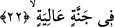
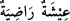
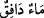
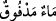

maıyş” kelimleri de aynı anlamdadırlar. Bâzı âlimlerin ifâdesine göre “a-y-ş” kökü,
“ıyş” şeklinde okunduğunda sonuna “tâ” harfi getirilir, tıpkı âyetteki “ıyşetun”
kelimesinde olduğu gibi. “Ayş” canlılara özel bir hayat demektir. Bu hayat, normal
bilinen hayattan daha özel bir yaşama biçimidir. Çünkü “hayat” kelimesi hayvan
hakkında kullanıldığı gibi şahin, doğan ve melek gibi varlıklar hakkında da kullanılır.
Bu kökten türetilen bir kelime daha vardır ki, insanın yaşamasını kendisiyle temin ettiği
için buna “maıyşet” denmiştir. Nitekim Peygamberimiz (s.a.) “ayş” kökünü bir hadis-i
şeriflerinde kullanarak şöyle buyurmuşlardır: “Allahım! Âhiret hayatından başka hayat
yoktur.” [72]
“Hoşnud” anlamına olmak üzere âyette yer alan “radıyeh” kelimesi ile kasdedilen,
“orada yaşayan kişinin kendisinden râzı olacağı bir hayat” anlamıdır. Çünkü bu kelime
sîğa nisbeti şeklindedir. Zira nisbetler ikiye ayrılır. Birisi harfle nisbettir. Meselâ
Mekkeli ve Medineli dediğimizde harf ile nisbetten söz etmiş oluruz. Bir de sîğa nisbeti
vardır. “Lâbin: süt veren” ve “tâmir: hurması olan” kelimelerinde olduğu gibi. İşte
“ıyşetun radiyetun” ifâdesi bu kabilden olabilir. Veya “rıza” kökü “ıyşe” kelimesinin
zamirine isnâd edilmiştir ki bu da o hayatı süren kişidir. Dolayısıyla burada isnâd-ı
mecâzî olmasından söz edilebilir. Bu iki takdirin sonucunda çıkan anlam; “sürülecek
hayatın kendisinden hoşnud olunacak bir hayat olduğu”dur. “/Iyşetun radiyetun”
ifâdesini “kendisinden hoşnud olunan hayat” şeklinde tefsir eden âlimin ifâdesi de yine
bizim yaptığımız açıklamada düğümlenir. Yâni sürülecek olan o hayat, bolluk ve
genişlik nedeniyle sanki içindeki bu bolluktan ve hoşnutluktan -mecâzen- râzıdır veya
hayatın kendisi râzı olunan bir hayattır. Bu tıpkı “/mâun dâfikun” ifâdesinin
“/mâun medfûkun: dökülen, fışkıran su” anlamına gelmesi gibidir.
et-Tevilatu’n-necmiyye’de bu âyet-i kerîme şöyle tefsir olunur: Artık o kişi hoşnud ve
âfiyet içinde olarak bulanık olmayan, kaçınma musîbetlerinden uzak bir hayat sürer. O,
hürmet ve haşmete yakın, kirlerden arınmış beğenilen bir hayattadır.
Bu hayatın kendisinden hoşnud olunacak hayat olması, şu üç temel unsuru içine almış
olmasından dolayıdır. Bunlar:
1- Hayatın her türlü bulanıklık ve kirden saf, duru bir menfaat oluşu,
2- Sürekli ve bir gün zeval ile kesintiye uğrayacağının beklenmemesi,
3- Ondan râzı olan kişiyi yüceltmesi ve ona orada devamlı ikram edilmesi.
Eğer bu hayat böyle anlatılan gibi olmazsa, o zaman karşı tarafı alaya alma ve istidrâc
niteliğinde olur.
Kitabı kendisine sağ tarafından verilecek olan kimsenin sürecek olduğu hayat yukarda
sıraladığımız üç temel unsuru kapsayan bir hayattır. Dolayısıyla bu şekilde sürülecek
olan hayat, kendisinden hoşnud olunacak hayattır.